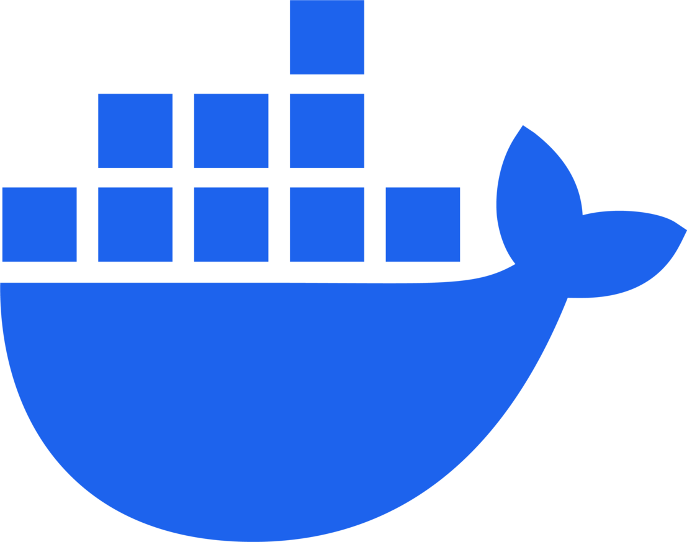
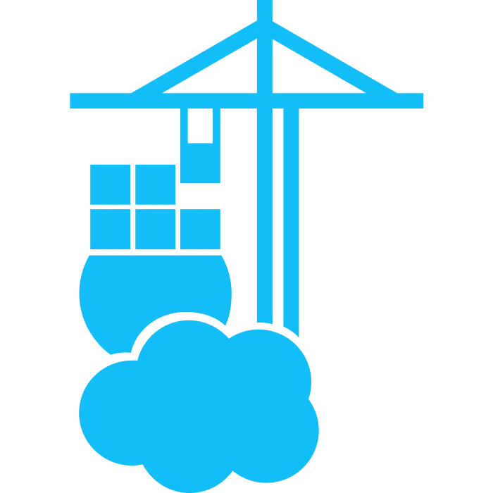
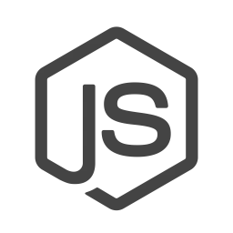
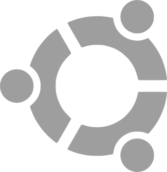

Автоматизация бизнес-процессов и ИИ-оркестрация под ключ
Как устроена инфраструктура Log-AI
Объединяем CRM, мессенджеры, сайты и маркетплейсы в единый автоматизированный поток данных. Заявки, заказы и коммуникации не теряются и обрабатываются без участия человека.
Фиксированная стоимость внедрения и поддержки. Вы заранее точно знаете, сколько будет стоить владение системой. Мы делаем процесс прозрачным и понятным на каждом этапе.
Разворачиваем ИИ-системы и базы знаний в изолированной инфраструктуре. Доступ к данным имеет только ваша компания, без сторонних сервисов. Полный контроль данных и безопасность на уровне архитектуры.
Архитектура n8n-оркестратора
Карта сквозного распределения потоков данных и локального ИИ
Мгновенный захват вебхуков и сообщений из всех каналов (маркетплейсы, мессенджеры и внутренние системы).
Первичная фильтрация дублей и спама. Извлечение точного контекста из базы знаний без галлюцинаций.
Потоки данных через PostgreSQL с полной изоляцией процессов и защитой от коллизий.
Автоматическая запись данных в CRM/ERP, публикация API-ответов и уведомления владельцу.
Этапы интеграции процессов
Изучаем ваши текущие воронки продаж, регламенты, CRM-системы и складские процессы. Выявляем скрытые убытки и рутинные узкие места, которые можно автоматизировать в первую очередь.
Разрабатываем сквозную логику n8n-сценариев и подготавливаем векторную базу знаний Qdrant. Прописываем алгоритмы обработки очередей и защиты от дублей лидов для стабильной работы системы.
Переносим готовую систему в промышленную изолированную инфраструктуру (выделенный сервер / Docker / ЦОД). Подключаем локальные ИИ-модели Ollama, настраиваем прокси-контейнеры и Watchdog-мониторинг аптайма.
Предоставляем первый месяц сопровождения в формате тест-драйва. Калибруем промпты ИИ-агента на реальном трафике, проверяем транзакционную стабильность и передаем систему в боевой контур вашего бизнеса.
Цифры, факты и окупаемость
СКРЫТЫЕ УБЫТКИ БИЗНЕСА VS АВТОНОМНАЯ ЦИФРОВАЯ АРХИТЕКТУРА
Ваша команда тратит время на перенос данных, обработку заявок и заполнение таблиц вместо работы с клиентами и продажами. ИИ-оркестрация берет эти задачи на себя и снижает нагрузку на сотрудников.
Цена человеческого фактора. Опечатка в артикуле на Wildberries или Ozon приводит к штрафам, пересорту и дополнительным операционным потерям. ИИ-оркестрация бэкенда исключает ручные ошибки ввода данных и защищает бюджет от санкций маркетплейсов.
Время реакции системы. Автоматические сценарии обрабатывают обращения за 2 секунды и запускают необходимые процессы без участия сотрудников в режиме 24/7.
Ваши данные никуда не улетают. Мы разворачиваем векторные базы знаний и сценарии на изолированном сервере. Вся коммерческая информация вашей компании зашифрована и недоступна третьим лицам.
Автоматизация снижает объем ручных операций, исключает скрытые убытки, сокращает количество ошибок и помогает эффективнее использовать ресурсы и зарплатный фонд компании.
ИИ-ассистенты анализируют контекст обращений, используют внутренние документы и базы знаний компании, помогают квалифицировать клиентов и автоматически запускают необходимые бизнес-процессы.
Возможности системы Log-AI
УПРАВЛЕНИЕ ПРОЦЕССАМИ VS РУТИННЫЕ ПОТЕРИ БИЗНЕСА
Интеллектуальный поиск
Поиск точных фактов в документах, регламентах и прайсах. Интеграция с векторной базой Qdrant минимизирует ошибки и ускоряет обработку данных.
Оркестрация процессов
Связывание CRM, мессенджеров и ERP в единую цепочку. Автоматическое распределение лидов и данных между системами исключает ручной фактор и задержки.
Изолированная инфраструктура
Все вычисления проходят в независимом контуре. Данные бизнеса защищены от утечек и полностью независимы от зарубежных сервисов.
Аналитика и ROI
Система собирает ключевые метрики, позволяет оценивать эффективность процессов и экономию бюджета на персонале и операциях.
Автоматизация лидов
Автозаполнение карточек сделок, квалификация лидов и распределение по ответственным менеджерам без ошибок.
Мониторинг и оповещения
Контроль работы системы, Watchdog-мониторинг и триггерные уведомления сотрудников о критических событиях.
Реальные сценарии и боли бизнеса
Как ИИ-оркестратор заменяет ручной труд и спасает от убытков
Маркетплейсы и E-commerce
Синхронизация складов и авто-ответыБоль: Менеджеры вручную переносят остатки в таблицы, путают артикулы (привет, штрафы от Ozon/WB за пересорт от 50к), а по ночам покупатели оставляют гневные отзывы, которые висят без ответов часами и топят рейтинг карточки.
Решение: n8n-воркфлоу потоком забирает отзывы и вопросы с 4 маркетплейсов. Двухэтапный ИИ-цензор (Guardrails) генерирует уникальный человечный ответ. Если прилетает жесткий негатив — система через SKIP LOCKED не рискует, а мгновенно перенаправляет задачу в Telegram владельцу.
Отделы продаж и CRM-системы
Автоматическая квалификация лидовБоль: Лиды из всех каналов (Telegram, WhatsApp, сайт) падают в общую кучу. Менеджеры не успевают отвечать за 5 минут, клиенты уходят к конкурентам. Сотрудники тратят 40% времени на уточнения: «Какая у вас ниша?», «Какой бюджет?», вместо продажи.
Решение: ИИ-оркестратор мгновенно перехватывает сообщения во всех мессенджерах. Настраиваемый сценарий квалификации задаёт клиенту уточняющие вопросы, сводит диалог в удобную карточку и через API заносит лида в CRM (amoCRM/Битрикс24), автоматически проставляя теги и создавая задачу для менеджера.
Сфера услуг (Клиники, Салоны, СТО, Аренда)
Автоматическое расписание и триггерыБоль: Администраторы ведут запись вручную в Google-календарях или блокнотах. Возникают накладки времени, ошибки в расписании и «двойные брони». Клиенты забывают про визит, мастера простаивают, бизнес теряет выручку.
Решение: ИИ-ассистент работает с актуальной загрузкой мастеров и доступными слотами. Он предлагает клиенту свободные окна в чате, подтверждает запись и автоматически отправляет напоминания о визите (например, за 2 часа до приёма).
Оптовые продажи и Дистрибуция
RAG-поиск по сложным прайсамБоль: Прайс-лист компании включает до 10 000 позиций в Excel и PDF. Клиенты постоянно уточняют наличие, характеристики и цены: «есть ли кабель 5 мм?», «какая цена от 100 штук?». Менеджеры тратят много времени на поиск информации в файлах, увеличивая время ответа.
Решение: Номенклатура, прайс-листы и технические спецификации загружаются в векторную базу знаний Qdrant. Локальная нейросеть (Ollama) обрабатывает запрос, находит релевантные позиции по контексту и формирует ответ на основе данных компании, включая цены и условия закупки.
Онлайн-школы и Инфобизнес
Снижение оттока и авто-прогревыБоль: Студенты задают большое количество повторяющихся вопросов в чатах поддержки: «Где найти ссылку?», «Когда дедлайн?». Кураторы перегружены и отвечают с задержками. После вебинаров отдел продаж не успевает оперативно обработать заявки, и часть горячих лидов теряет актуальность к следующему дню.
Решение: ИИ-ассистент, подключенный к базе знаний курса через Qdrant, отвечает на типовые и учебные вопросы студентов 24/7 на основе материалов программы. После вебинара n8n сегментирует участников и запускает автоматизированные цепочки сообщений для повторного контакта с теми, кто не совершил покупку сразу.
Недвижимость и Девелопмент
Моментальный подбор объектов по фильтрамБоль: Клиент пишет: «Ищу двушку до 15 млн возле парка». Риелтор тратит часы на поиск по базе и подготовку презентации. Пока он это делает, клиент может найти другой вариант, а менеджеры забывают вовремя перезванивать по длинному циклу сделки.
Решение: ИИ-оркестратор мгновенно анализирует запрос клиента и сверяет его с базой ЖК через векторный поиск. В чат отправляется готовая подборка объектов с описаниями и фото из базы за считанные секунды. Система n8n отслеживает каждый шаг в CRM и напоминает менеджеру о необходимых действиях, если сделка «зависла».
Логистика и Транспортные компании
Расчет тарифов и трекинг статусовБоль: Клиенты постоянно обращаются с типовыми запросами: «Где мой контейнер?», «Посчитайте доставку Москва–Владивосток». Логисты отвлекаются на водителей, вручную проверяют статусы в 1С и рассчитывают тарифы, из-за чего время ответа увеличивается и часть клиентов уходит к конкурентам.
Решение: n8n связывает мессенджеры с внутренней CRM/ERP и системами GPS-трекинга. Бот по номеру накладной предоставляет актуальный статус и местоположение груза. Дополнительно ИИ-модуль помогает рассчитывать стоимость доставки по заданным тарифным правилам прямо в диалоге, опираясь на данные системы
HR, Подбор персонала и Линейный найм
Первичный скрининг и авто-интервьюБоль: При найме линейного персонала (курьеры, операторы, продавцы) HR-отдел получает большое количество откликов с hh.ru. Значительная часть кандидатов не соответствует базовым требованиям (гражданство, график, опыт), при этом рекрутеры тратят много времени на первичный отбор и уточняющие звонки.
Решение: n8n принимает отклики и переводит кандидата в Telegram-бота. ИИ проводит структурированное первичное интервью по заданным критериям, отсеивает неподходящие анкеты и формирует краткую сводку по каждому кандидату. Подходящие кандидаты автоматически передаются HR-специалисту для дальнейшего рассмотрения.
Производственные компании и Заводы
Контроль рекламаций и расчет ТЗБоль: Клиенты присылают рекламации и технические ТЗ в почту и чаты вперемешку. Инженеры тратят дни на изучение сотен страниц спецификаций, чтобы выделить требования к деталям, а коммерческие предложения (КП) формируются неделями.
Решение: n8n автоматически собирает входящие письма и файлы. ИИ-оркестратор суммаризирует ТЗ, извлекает ключевые параметры по ГОСТ/ISO, сверяет техническую возможность с базой данных завода и формирует черновик коммерческого предложения для инженера за минуты.
Автосервисы, СТО и Детейлинг
Запись на ремонт по симптомам болиБоль: Автовладельцы описывают проблему размыто: «Что-то стучит сзади справа на кочках, сколько стоит ремонт?». Мастер-приемщик тратит время на уточнение марки, года и симптомов, пока клиент может уйти к конкурентам из-за задержки ответа.
Решение: ИИ-ассистент помогает структурировать обращение клиента: уточняет ключевые параметры автомобиля и симптомы, формирует первичную классификацию возможной проблемы и проверяет доступные слоты в расписании. Далее данные автоматически передаются в CRM с уже заполненной карточкой заявки и предложением времени диагностики.
Строительные компании и Ремонт под ключ
Калькуляция смет и ведение по воронкеБоль: Клиенты спрашивают: «Дом 120 м² из газобетона, сколько выйдет?». Сметчики заняты на объектах, ответы затягиваются на 2–3 дня. За это время половина заказчиков уходит к конкурентам.
Решение: ИИ-оркестратор через мессенджеры проводит структурированное анкетирование (фундамент, стены, кровля, удаленность объекта). На основе настроенных n8n-алгоритмов система рассчитывает ориентировочную стоимость и формирует PDF-коммерческое предложение, автоматически фиксируя лид в CRM.
Рестораны, Отели и Банкетные залы
Бронирование столов и ответы по менюБоль: В пиковые часы (особенно по вечерам и в выходные) хостес перегружена звонками и гостями в зале. Клиенты в мессенджерах не могут быстро получить информацию о меню, среднем чеке, наличии веганских позиций или свободных слотах бронирования и часто уходят к конкурентам.
Решение: RAG-система на базе Qdrant использует актуальные данные меню, винной карты и правил бронирования. ИИ-ассистент отвечает на вопросы гостей в мессенджерах, интегрируется с системами автоматизации ресторанного бизнеса(iiko / R-Keeper / отельные CRM) и помогает оформлять предварительное бронирование стола или номера с последующим подтверждением.
// Авторизованные протоколы синхронизации баз данных:
Сквозная автоматизация продаж, данных и коммуникаций
Единый контур управления лидами, маркетплейсами и внутренними операциями. Мы объединяем ключевые каналы, CRM и бизнес-процессы в сквозную автоматизированную архитектуру.
- ✔ Убирает ручной ввод и исключает любые случайные ошибки сотрудников.
- ✔ Снижает нагрузку на команду, полностью убирая выгорание от рутины.
- ✔ Обеспечивает сквозной контроль остатков, входящих заказов и коммуникаций в режиме реального времени.
Масштабируемые решения: от базовой обработки заявок до комплексного e-commerce и внедрения корпоративных ИИ-ассистентов.
⚡ Первичный аудит и проектирование логики — бесплатно Индивидуальный разбор регламентов, маршрутов данных и сценариев работы перед стартом разработки.
БАЗОВАЯ АВТОМАТИЗАЦИЯ
Автоматизируем ключевые процессы вашего бизнеса без замены существующих систем. Все заявки, сообщения и обращения из всех каналов автоматически попадают в CRM и распределяются по нужным сотрудникам.
Где работает: система работает на нашей защищённой инфраструктуре в дата-центре.
- ✔ Ни одна заявка не теряется
- ✔ Все обращения сразу фиксируются в CRM
- ✔ Уведомления о новых клиентах приходят мгновенно
- ✔ Убирается ручной перенос данных между сервисами
- ✔ Автоматически ставятся задачи менеджерам
И РАЗВИТИЕ СИСТЕМЫ
со 2-го мес
АВТОМАТИЗАЦИЯ E-COMMERCE
Забудьте о ручной работе с заказами: мы объединяем все продажи и процессы между маркетплейсами, CRM и складами в единую систему. Теперь управление остатками, ценами, заказами и карточками товаров происходит автоматически, а вы экономите время и избегаете ошибок.
Где работает: система размещается на нашей защищённой инфраструктур в дата-центре — ваши данные под полной безопасностью.
- ✔ Все маркетплейсы и продажи в одной системе — больше никакой путаницы
- ✔ Автоматическое обновление остатков, цен и статусов заказов
- ✔ Централизованная обработка вопросов, отзывов и сообщений покупателей
- ✔ Защита от пересорта, штрафов и ошибок ручного ввода
- ✔ Критические события мгновенно направляются ответственным сотрудникам
- ✔ Полная интеграция с CRM, 1С, МойСклад и внутренними системами
И РАЗВИТИЕ СИСТЕМЫ
со 2-го мес
ИИ-АССИСТЕНТЫ
Мы внедряем ИИ-ассистентов в бизнес-процессы компании. Они помогают обрабатывать обращения клиентов, консультируют пользователей и поддерживают сотрудников в ежедневной работе. Система работает с вашими материалами: документами, регламентами и базой знаний компании.
Где работает: система размещается на нашей защищённой инфраструктуре в дата-центре с использованием локальных ИИ-моделей.
- ✔ Автозаполнение карточек на маркетплейсах — лиды сразу готовы к обработке.
- ✔ Автоматический анализ и обработка всех клиентских сообщений
- ✔ ИИ-консультант в мессенджерах, соцсетях, CRM и на сайте компании
- ✔ Ответы формируются на основе знаний вашей компании
- ✔ Ведение истории диалогов и понимание намерений клиентов
- ✔ Круглосуточная работа без отпусков и выходных
- ✔ Снижение нагрузки на отделы продаж и поддержки
- ✔ Возможность работы без внешних API
И РАЗВИТИЕ СИСТЕМЫ
со 2-го мес
ИНДИВИДУАЛЬНЫЕ КОРПОРАТИВНЫЕ СИСТЕМЫ (ПОД КЛЮЧ)
Создаём полностью индивидуальные цифровые системы автоматизации для вашей компании. Решение под ваши процессы, с полным контролем, безопасностью и независимостью от внешних сервисов.
Где работает: система развёртывается на защищённой инфраструктуре вашей компании или в выделенном дата-центре.
- ✔ Развёртывание на ваших серверах или выделенных мощностях
- ✔ Полностью удалённая настройка через защищённые каналы (SSH/VPN)
- ✔ Интеграция CRM, ERP, внутренних сервисов и баз данных
- ✔ Автоматизация любых бизнес-процессов
- ✔ Корпоративные ИИ-ассистенты с доступом к внутренним данным
- ✔ Полный контроль над безопасностью и данными компании
- ✔ Масштабируемая архитектура под рост и новые задачи
И РАЗВИТИЕ СИСТЕМЫ
со 2-го мес
Часто задаваемые вопросы
Технические и коммерческие регламенты взаимодействия
За что фиксируется оплата на этапе интеграции бэкенда?
Оплата включает кастомное проектирование архитектуры, разработку n8n-воркфлоу под ваши задачи и развертывание закрытого контура. Мы настраиваем интеграции с CRM, мессенджерами и маркетплейсами. Первый месяц сопровождения и калибровки ИИ предоставляется бесплатно в формате тест-драйва.
Что входит в ежемесячное сопровождение системы?
Со второго месяца в подписку входят: аренда и поддержка выделенной инфраструктуры, контроль стабильности интеграций и API, а также постоянное развитие системы под задачи бизнеса.
В рамках сопровождения обеспечиваются: исправление ошибок, доработка и расширение сценариев, создание новых workflow и интеграций, обновление логики под изменения API маркетплейсов, резервное копирование и мониторинг всей инфраструктуры.
Предусмотрена ли юридическая ответственность за сбои алгоритмов?
Да, мы работаем официально по договору. В рамках соглашения SLA время реагирования инженера на критический инцидент составляет до 4 часов. При этом совокупная финансовая ответственность за технические ошибки на стороне ИИ-платформы жёстко ограничена размером месячной абонентской платы. Ответственность за любые прямые или косвенные сбои на стороне внешних систем (маркетплейсов, CRM или мессенджеров) полностью исключена. Система создается с резервными механизмами и Watchdog-контролем, чтобы минимизировать любые операционные риски.
Как обеспечивается стабильность системы при внешних сбоях?
Стабильность обеспечивается за счёт изолированной инфраструктуры, резервирования ключевых компонентов и постоянного мониторинга всех процессов. Система построена на устойчивых сценариях оркестрации, автоматически обрабатывает ошибки внешних API и перераспределяет задачи без остановки работы бизнес-логики.
Где физически развернута инфраструктура и защищены ли данные?
Вычисления и базы знаний Qdrant работают на независимых Linux-серверах в специализированном дата-центре с резервным питанием. Для каждой компании разворачивается изолированный и зашифрованный Private Cloud-контур в Docker. Все коммерческие данные и переписки надежно защищены от внешних утечек.
Есть ли дополнительные расходы на ИИ-модели и токены?
Нет, дополнительные расходы на использование ИИ-моделей, токены или количество запросов не взимаются. Система работает на выделенной инфраструктуре с заранее рассчитанной стоимостью сопровождения, без зависимости от сторонних API и оплаты за каждый запрос.
Мониторинг инфраструктуры Log-AI
Контроль доступности локальных ИИ-нод и транзакционных очередей в реальном времени
Технологии и инструменты
n8n
🔗
API / Webhooks

Docker

Portainer
PostgreSQL

Ollama
🧠
Local AI
Caddy
🌐
Tunnel / FRP

Java
Kubernetes

Node.js

Ubuntu

Grafana
GitHub
Monitoring
Живая демонстрация логики ядра
Пример обработки входящей коммерческой транзакции в автономном контуре Log-AI
STATUS: CORE_SYSTEM_ACTIVE
Этот сайт — работающий пример автоматизации бизнес-процессов. Вся страница и диалоговое окно чата обслуживаются локальной ИИ-системой. Бэкенд в реальном времени принимает вебхуки, классифицирует входящие вопросы пользователей и автоматически фиксирует данные в CRM.
